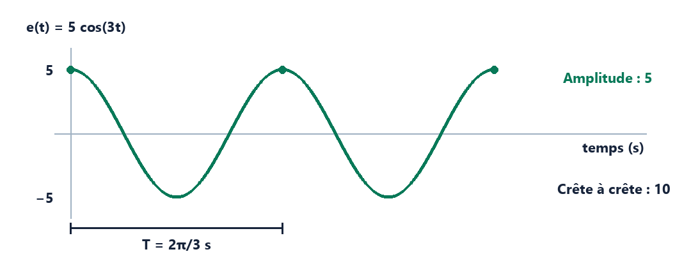

Comprendre le cours
1. Décrire un signal par une fonction
Un signal décrit l’évolution d’une grandeur, comme une tension, selon une variable, souvent le temps. Dans y=f(t), la valeur en sortie s’appelle image du temps t. Les temps qui donnent une valeur fixée sont ses antécédents. Une fonction paire vérifie f(−t)=f(t). Une fonction impaire vérifie f(−t)=−f(t). Dans ces deux cas, le domaine doit être symétrique par rapport à zéro.
Une fonction définie par morceaux peut suivre plusieurs règles selon l’intervalle. Pour lire sa valeur en un point de jonction, regarde quel intervalle contient ce point. Dans f(g(t)), calcule d’abord g(t), puis vérifie que ce nombre est accepté par f.
2. Utiliser une droite et interpoler
Une fonction affine a la forme mt+b. Le coefficient m mesure le changement de valeur par unité de temps. Entre deux points A(t₁,y₁) et B(t₂,y₂), il vaut (y₂−y₁)/(t₂−t₁). Pour retrouver b, remplace t et y par les coordonnées d’un point.
L’interpolation linéaire estime les valeurs intermédiaires avec le segment entre deux mesures. À une fraction λ du trajet, on a t=t₁+λ(t₂−t₁) et y=y₁+λ(y₂−y₁). Elle suppose une évolution linéaire entre les mesures. Les valeurs ajoutées dépendent du modèle choisi.
3. Reconnaître les formes du cours
La valeur absolue |t| donne la distance à zéro et s’écrit t pour t≥0, −t pour t<0. La racine carrée est définie pour une entrée non négative. Pour un second degré, le signe du discriminant indique le nombre de racines réelles distinctes. Quand tu étudies un signal par morceaux, identifie chaque forme avant de tracer.
Une décroissance exponentielle peut s’écrire A e−t/τ, avec τ>0. Au temps τ, la valeur vaut A/e. Le logarithme renverse l’exponentielle. Pour déterminer le temps d’atteinte d’une valeur positive sur cette courbe, isole d’abord l’exponentielle et applique ln.
4. Lire une sinusoïde et un déphasage
Dans s(t)=A cos(ωt+φ) avec A>0 et ω>0, A est l’amplitude, ω la pulsation en radians par seconde et φ la phase en radians. Une période correspond à un angle supplémentaire de 2π. Donc T=2π/ω et f=1/T=ω/(2π). Pour une sinusoïde centrée, l’amplitude crête à crête vaut 2A.

Retarder une courbe de t₀ remplace t par t−t₀. Le déphasage correspondant est −ωt₀. Pour retrouver un angle à partir d’un sinus, d’un cosinus ou d’une tangente, la fonction réciproque renvoie une branche précise. Utilise le cercle trigonométrique et la périodicité pour obtenir les autres solutions.
5. Construire des signaux à partir de motifs
Une porte est active sur un intervalle et inactive en dehors. Pour centrer une porte de largeur L au temps t₀, transforme l’argument en (t−t₀)/L si la porte de référence a une largeur 1 et un centre à zéro. Pour un créneau périodique, répète le motif à intervalles réguliers. Le rapport cyclique est la fraction de la période passée à l’état haut.
Le cours utilise aussi l’impulsion de Dirac, un modèle idéal concentré à un instant, et le peigne obtenu en répétant des impulsions tous les T. Il distingue le sinus cardinal. Avec la convention sinc(x)=sin(x)/x, la valeur en 0 est prolongée à 1 par continuité. Compare la formule de la convention utilisée avant de lire les zéros.
Du cours aux TD et TP
Questions TD & TP
Poly · Calculer une image, puis des antécédents
Énoncé. Soit f(x)=x²+x+1 sur [−2,2]. Donner l’image de 1,5 et les antécédents de 2.
- Pour une image, remplace
xpar la valeur donnée. On obtient2,25+1,5+1=4,75. - Pour les antécédents, résous
x²+x−1=0. Le discriminant vaut 5, d’où(−1−√5)/2et(−1+√5)/2. - Les deux valeurs se trouvent dans le domaine. Le contrôle du domaine fait partie de la réponse car une solution trouvée par le calcul peut être hors de l’intervalle.
TD1 · Interpoler trois échantillons intermédiaires
Énoncé du TD. Entre deux échantillons consécutifs, déterminer les trois échantillons à ajouter pour un sur-échantillonnage ×4 en supposant une variation linéaire.
- Note les points
(t₁,y₁)et(t₂,y₂). Divise leur écart de temps en quatre intervalles égaux. Les instants ajoutés sont à un quart, la moitié et trois quarts de cet écart. - Applique ces mêmes fractions au changement en ordonnée. Exemple de vérification avec
A(2,4)etB(6,12): les nouveaux points sont(3,6),(4,8)et(5,10). - Pour un facteur
n, remplace les trois fractions park/npourk=1,…,n−1.
Poly, p. 22 · Résoudre 5(1−e−t/4)=2
Énoncé. Retrouver le temps t auquel une grandeur décrite par 5(1−e−t/4) atteint 2.
- Divise par 5. Il reste
1−e−t/4=0,4, donce−t/4=0,6. - Applique
lnà 0,6, une valeur strictement positive, puis multiplie par −4. Le temps vaut−4 ln(0,6)≈2,04. - Vérifie que le résultat est positif et que l’expression rejoint bien 2 en remplaçant
t. Si le temps était négatif, la quantité1−e−t/4serait négative aussi.
Poly · Lire une période à partir de cos(100t)
Énoncé. Déterminer la pulsation, la période et la fréquence de e(t)=cos(100t), puis représenter son allure.
- Compare l’argument à
ωt. On aω=100 rad/s. Le coefficient 100 représente la pulsation. - La période vaut
2π/100=π/50 s≈62,8 ms. La fréquence vaut50/π Hz≈15,9 Hz. - Pars de 1 à
t=0. À un quart de période, le signal vaut 0. À une demi-période il vaut −1, puis il revient à 0 et à 1. Vérifie que les abscisses restent exprimées dans la même unité.
Application du poly · Transformer un retard en phase
Exemple d’application. Pour e(t)=5cos(3t), écrire le signal qui arrive avec un retard d’un quart de période.
- Calcule
T=2π/3, doncT/4=π/6. - Dans
e(t−π/6), développe l’argument3(t−π/6)=3t−π/2. La phase vaut donc−π/2. - Le nouveau premier maximum est à
t=π/6, au moment où l’ancien argument retrouve zéro. Ce déplacement vers la droite confirme le signe.